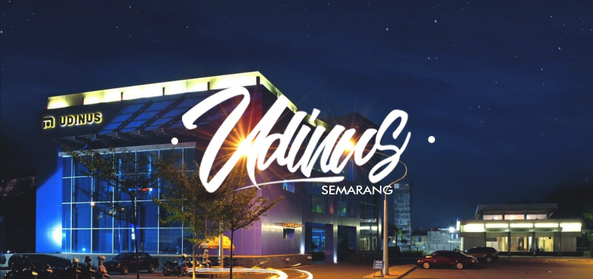

5 Alasan yang Bikin Kamu Jatuh Cinta Sama Udinus
Yang Ke-1
di tahun 2017 ini beberapa jurusan di kampus udinus udah dapet akreditasi A, jadi udah gak usah diraguin lagi deh gmn kualitas pendidikan di udinus, beberapa jurusan yang udah dapet akreditasi A antara lain : Teknik Informatika S1, Sistem Informasi S1, Desain Komunikasi Visual S1, Sastra Inggris S1 buat kalian yang pengen cek akreditasi udinus yang lain bisa cek disini Baca selengkapnya>>Yang Ke-2
buat kalian yang pernah tau atau pernah lewat icon kota semarang yang namanya Tugu Muda, pasti kalian pernah liatkan gedung biru yang menjulang tinggi di sebelah wisma perdamaian ?? gak mungkin deh klo gak pernah liat. kampus udinus ini lokasi nya sangat strategis dan berada di pusat kota, jadi kalian deketlah mau kemana-mana , mau ke perpusda tinggal nyebrang aja, mau wisata kota, ada tugu muda ada lawang sewu, mau nge-mall juga tinggal nyebrang dikit udah bisa ke dp-mall / paragon, gmn ga keren coba.Yang Ke-3
kalian pernah tau rooftop ? ga perlu nyari susah-susah deh tempat buat hunting foto yang keren, udinus udah punya sendiri kok, jadi buat kalian yang hobi fotografi, atau kalian yang suka tempat2 tinggi, udah ga perlu bingung lagi nyari2 tempat, di udinus ada braay !! rooftop ini biasa nya dipake mahasiswa buat hunting foto, ngerjain tugas, atau mungkin buat anak2 dkv biasanya dipake buat outdoor class, jadi kalian ngelaksanain matkul diluar kelas, biasanya sih waktu ada matkul yang gambar2 gitu haha.Yang Ke-4
selain rooftop , udinus juga punya tempat keren nih di kampus (maaf ga ada pict nya), biasanya buat ngumpul2 atau ngerjain tugas bareng2 , namanya “Meja Batu” , meja batu ini letak nya di gedung D , tempatnya enak banget adem dan yang pasti asik buat ngobrol bareng temen2 , selain itu lokasi meja batu ini deket banget sama kantin , jadi kalo kalian lagi bikin tugas bareng2 terus tiba2 laper , tinggal pesen aja deh ke kantin , mantab ga tuhhh . kurang lebih suasana kantin udinus kaya pict di atas itu .
Yang Ke-5
Yang bikin kalian betah ngampus
adalah kelas nya adem karena tiap kelas udah ada ac nya haha , jadi ga usah takut kepanasan atau takut bedak nya luntur buat yang cewe2 , kalian bisa ngampus dan tetep kece kok . Ga cuma kelas , setiap lab yang ada di kampus ini juga udah lengkap banget fasilitas nya , tiap tingkatan lantai ada wifi nya masing2 , jadi kalo kalian ga ada kuota internet tinggal masuk gedung aja , terus connect ke wifi disitu , tapi wifi nya khusus mahasiswa/mahasiswi udinus ya , karena kalian perlu login pake nim dan password yang udah ditentuin